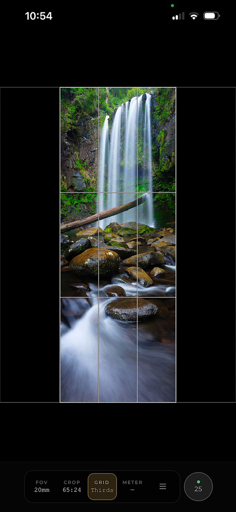
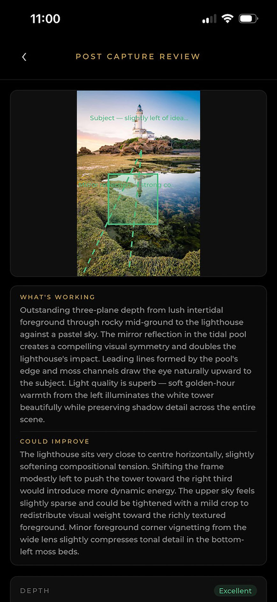
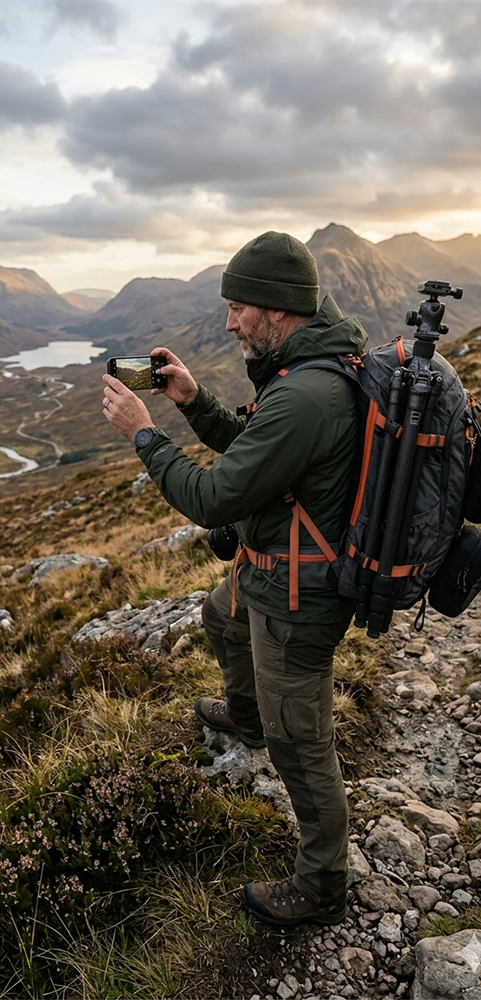

Find the shot before you set up. See closely what your camera sees — live, in the field, so you can compose with confidence before the gear comes out.
Use your iPhone to closely approximate the field of view of any camera and lens combination. Frame, compose, and refine — then commit.
iOS 16+ · iPhone required



The idea
The best landscape shots are found on foot, long before the tripod goes down. Scout FOV puts your camera's perspective in your pocket so you can make compositional decisions in the field — not guesses.
01
Exact field of view
Scout calculates your camera's field of view from its sensor dimensions and focal length, then applies the closest possible zoom to your iPhone's live feed. The result is a highly accurate representation of what your camera sees.
02
Crop ratio overlays
Apply any crop ratio — 4:3, 16:9, 1:1, panoramic, or custom — as a live overlay on the viewfinder. See how a tighter crop changes the composition before you commit to it in post.
03
Composition grids
Overlay rule-of-thirds, golden ratio, diagonal, and other composition guides. Use them while scouting to find where your subject, horizon, and leading lines should land in the frame.
04
Works with any camera
35mm SLR, medium format, large format, digital — Scout works with any camera system. Choose from hundreds of bodies in the database, or add your own custom camera with its sensor dimensions.
AI Composition Assist
Capture a frame in Scout and get detailed, intelligent feedback on your composition — not generic tips, but specific observations about what is working, what isn't, and how to improve it.
Compositional analysis
Scout analyses subject placement, horizon position, leading lines, and frame balance — giving you a clear read on the compositional strengths and weaknesses of the shot.
Light quality assessment
Feedback on the quality, direction, and mood of the light in the scene — including whether the conditions suit the subject and what to watch for as the light changes.
Actionable suggestions
Specific, practical advice — shift left two metres, wait for the shadow to move, try a longer focal length. Feedback you can act on while you're still standing there.
Save and review
Every analysed frame is saved alongside the feedback for later reference. Build a personal library of scouted compositions with notes attached.
Features
Scout FOV is built around one purpose — helping you find and frame better landscape shots before you set up your gear.
Live FOV viewfinder
Real-time field-of-view preview based on your camera's sensor dimensions and focal length. Ultra-wide to telephoto — Scout gets you as close as possible to what your camera sees.
Composition grids
Six overlays to guide every composition decision — choose the one that fits your scene.
Crop ratio overlays
Eight crop ratios as live overlays — see exactly how a crop changes your composition before committing in post.
Extensive camera database
Hundreds of cameras pre-loaded — 35mm, medium format (6×4.5 through 6×17), large format, and digital. Can't find yours? Add a custom body with any sensor dimensions.
Built-in light meter
Live scene EV reading drawn from your iPhone's exposure data. Know whether the light is worth shooting — or when to come back.
Save scout locations
Save captured frames with gear settings attached as scouting references. Build a library of shots to return to — organised by project or location.
How it works
Scout calculates a close approximation of your camera's field of view from its sensor dimensions and focal length, then applies it to your iPhone's live camera feed.
Add your kit
Choose your camera body from the database — or add a custom one with your sensor dimensions and any lenses you shoot with. Scout stores your kit so it's ready each time you open the app.
Select your camera and lens
Tap the camera and lens you're planning to shoot with. Scout calculates the field of view and adjusts your iPhone's live viewfinder to closely match.
Walk the scene and compose
Move through the location and compose through your phone just as you would with your camera. Overlay grids, adjust crop ratios, check the light, and find the exact position and framing you want.
Get AI feedback (optional)
Capture a frame and let Scout's AI analyse the composition. Get specific feedback on what's working, what to shift, and what to try — while you're still on location.
Set up and shoot with confidence
You know the position, the framing, the light, and the crop. Set up your camera where Scout showed you. Less guesswork, fewer wasted frames.
Pricing
Scout FOV is a one-time purchase — no subscription, no recurring fees. The core app includes everything you need to scout and compose. AI Assist credits are an optional add-on if you want detailed composition feedback.
Scout FOV
$14.99
Includes 10 free AI Assist credits
AI Assist Top-Up
$4.99
50 additional AI composition analyses
Privacy Policy
Scout FOV is built with privacy in mind. Here is exactly what we collect, why, and how it is handled. Last updated: June 2026.
We collect your email address when you sign in. This is the only personal information Scout stores. Your email is used solely for authentication — to let you sign in and keep your kit and saved locations available across devices.
Scout uses your iPhone's camera to display a live viewfinder. Camera footage is processed entirely on-device and is never recorded, stored, or transmitted. It is used only to render the live FOV preview.
Scout does not request or use location permissions.
When you use AI Assist, the captured frame is transmitted securely to our AI provider for analysis. Frames are used only to generate your feedback and are not stored beyond that request or used to train any models. You are in control of when an image is sent — no automatic uploads occur.
All purchases are handled through Apple's App Store. We do not see or store your payment information.
Scout uses Supabase for secure authentication and data storage, and Sentry for anonymous crash reporting. No advertising SDKs or tracking frameworks are included.
To delete your account and all associated data, email scoutfovapp@gmail.com with the subject "Delete my account". We will process the request within 7 days.
Questions about privacy? Email scoutfovapp@gmail.com.
Accuracy note. Scout FOV calculates field of view from the nominal sensor dimensions and focal length of each camera and lens in its database. In practice, minor variations in physical hardware — including lens element construction, focus breathing, sensor tolerances, and iPhone optical system differences — mean the preview is a close approximation rather than a perfect replication. For most scouting and composition purposes, the difference is negligible. Users who require engineering-grade precision should treat Scout as a strong compositional guide rather than a calibration instrument.